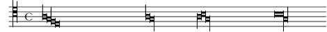
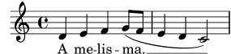
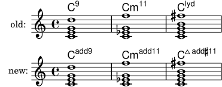

| [ << New for musical notation ] | [Top][Contents] | [ Miscellaneous improvements >> ] |
| [ < Text and font improvements ] | [ Up: Top ] | [ Miscellaneous improvements > ] |
New for specialist notation
- For consistency with other ancient clefs, five new mensural clefs
are available:
"mensural-f2","mensural-f3","mensural-f4"(same as"mensural-f"),"mensural-f5","mensural-g1","mensural-g2"(same as"mensural-g"). - The default time signature and accidental style in a
PetrucciStaffcontext is now the same as inMensuralStaff. - White mensural ligatures now support some rare ligatures
(semibreves alone or in the middle),
and allow tweaks to show some non-necessary stems.
\score { \relative { \set Score.timing = ##f \set Score.measureBarType = #'() \override NoteHead.style = #'petrucci \override Staff.TimeSignature.style = #'mensural \clef "petrucci-c4" \[ a1 g f e \] \[ a1 g\longa \] \[ \tweak left-down-stem ##t a\breve b \tweak right-down-stem ##t g\longa \] \[ \tweak right-down-stem ##t b\maxima \tweak right-up-stem ##t g\longa \] } \layout { \context { \Voice \remove Ligature_bracket_engraver \consists Mensural_ligature_engraver } } }

- The use of the file gregorian.ly is deprecated. While
still distributed for backward compatibility, it should be
replaced with a
VaticanaScorecontext together with some manual\layoutchanges (if necessary): code like\include "gregorian.ly" \score { \new VaticanaStaff { ... } }should become
\new VaticanaScore { \new VaticanaStaff { ... } } \layout { indent = 0 ragged-last = ##t } - LilyPond’s ‘arabic’ note name language is deprecated. While still working for backward compatibility (if you load hel-arabic.ly), it is recommended to use ‘english’, ‘italiano’, or your preferred note name language instead.
- Defaults for fret labels in fret diagrams have changed.
- − The default value for
fret-label-vertical-offsetis set to -0.5, which centers the label in the fret space. - − The default number format is now
'custom, with a format string of"~dfr"(resulting in ‘3fr’, for example), instead of'roman-lower.
- − The default value for
- Two new options are available for
fret-diagram-details:- −
string-overhangallows to define the extension of string lines beyond the last fret line, in multiples offret-distance. Default value 1. - −
barre-thicknessdefines the thickness of the barre line, in multiples ofdot-radius. Only defined forbarre-type=straight. Default value 1.
- −
- The command
\autoBeamOffnow stops auto-beaming immediately. Previously, its effect was delayed if a beam generated by the auto-beamer engraver was still active. - It is no longer necessary to switch off auto-beaming while using
\crossStaff. - The
\upbowand\downbowsigns are now properly inverted if used below a staff. As a consequence, the glyphsscripts.upbowandscripts.downbowhave been renamed toscripts.uupbowandscripts.udownbow, respectively, and the new inverted glyphs are namedscripts.dupbowandscripts.ddownbow.\relative c' { f4^\downbow f^\upbow f_\downbow f_\upbow }
![[image of music]](../1c/lily-d66aef31.png)
- In lyrics aligned to a melody, extender lines can now be added
automatically for words ending in a melisma.
\relative { d'4 e f4 g8( f e4 d c2) } \addlyrics { \set autoExtenders = ##t A me -- lis -- ma. }

- By default, chord names are now always shown with English pitch
names, no longer dependent on
\language. Similarly, commands like\germanChordsare no longer dependent on\languageeither.This change might cause differences in displayed chord names.
- A new command
\englishChordsis now available, making it possible to switch back to English chord names. - Some Scheme functions related to chord names have been renamed.
old new note-name->stringpitch->namealteration->text-accidental-markupaccidental->text-markupnote-name->markupchord-name:markupchord-name->german-markupchord-name:german-markupnote-name->german-markupchord-name:german-lowercase-name-markupchord-name->italian-markupchord-name:italian-markupconvert-lyhandles this automatically. - Two new Scheme functions related to chord names are now available:
pitch->alterationreturns the accidental for a given pitch and language;chord-name:name-markupreturns note name markup for a given pitch and language. - LilyPond now follows the Ignatzek chord name scheme more closely.
This reverts changes introduced in version 2.15.21 (in 2011),
which are now considered as incorrect and/or ambiguous.
oldException = { <c e g b fis'>-\markup \super "lyd" } chExceptions = #(append (sequential-music-to-chord-exceptions oldException #t) ignatzekExceptions) music = { <c e g d'>1 | <c es g f'> | <c e g b fis'> } \new StaffGroup \with { instrumentName = "old:" } << \new ChordNames \with { chordNameExceptions = #chExceptions additionalPitchPrefix = "" } \music \new Voice \transpose c c' \music >> \new StaffGroup \with { instrumentName = "new:" } << \new ChordNames \music \new Voice \transpose c c' \music >> \layout { indent = 1\cm line-width = 9\cm ragged-right = ##f }

| [ << New for musical notation ] | [Top][Contents] | [ Miscellaneous improvements >> ] |
| [ < Text and font improvements ] | [ Up: Top ] | [ Miscellaneous improvements > ] |